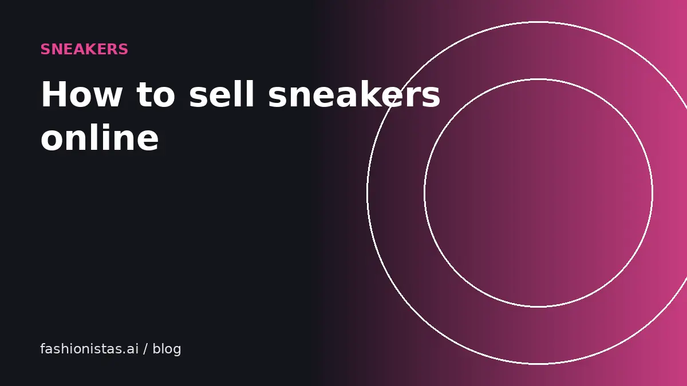

How to sell sneakers online for the best price

Sneakers have one of the most active resale markets there is, with public price data and buyers who know exactly what they want. That makes them easier to price than most clothing, but buyers are also quick to spot a weak listing or a suspicious pair. Here's how to price, photograph and list sneakers so they sell fast at a fair price.
Identify the exact pair
Everything starts with knowing exactly what you have.
- Find the style code on the size tag inside the shoe (often under the tongue) and on the box label. For Nike and Jordan, it looks like six characters, a dash and three digits.
- Search the style code to confirm the model, colorway name and release year.
- Note the size, and whether it's men's, women's or grade school (GS). See our shoe size conversion guide.
- Note whether you have the original box, the lid, extra laces and any tags.
The style code is what serious buyers search for, so it belongs in your title or description.
Price from sold data
Sneaker prices are public, which works in your favor.
- Search sold listings on eBay for the style code and your size.
- Check recent sales on GOAT, StockX or other sneaker marketplaces for the same size and condition.
- Separate deadstock (new, unworn) from used prices; they're different markets.
- Adjust for condition: creasing, sole wear, yellowing, scuffs, missing box.
- Subtract the fees of the app you plan to use.
Sizes matter a lot in sneakers. Very small and very large sizes, and the most common sizes for a popular model, can sell for noticeably different prices. Always compare your size, not just the model. Our pricing guide covers the general method.
Where to sell sneakers
| Platform | Best for | Fees to know (last checked Oct 2026) |
|---|---|---|
| eBay | New and used, all price levels | 8% with no per-order fee on athletic shoes at $150 or more; 13.6% plus $0.40 per order below $150 (no Store). Authenticity Guarantee on qualifying pairs. |
| GOAT / StockX | Deadstock and some used on GOAT | Platform seller fees and processing; check each app's current seller fee page. |
| Grailed | Designer and fashion sneakers, menswear audience | 6% (min $1.99) under $120, 9% at $120 and up, plus processing. |
| Poshmark | Casual and women's sneakers | $2.95 under $15, 20% at $15 and up. Authentication on eligible items $500+. |
| Mercari | Everyday pairs | Flat 10% on item price and buyer-paid shipping. |
| Depop | Trend-driven and Y2K styles | No US selling fee; 3.3% + $0.45 processing. |
For pairs over $150, eBay's lower athletic-shoe rate makes it one of the cheapest options. For everyday worn pairs, Mercari or Depop often keep more money in your pocket. See our full fee comparison.
Clean them first
Clean shoes sell faster and for more.
- Remove laces and wash them separately, or replace them with matching new ones.
- Brush off dirt with a soft brush; use a sneaker cleaner or mild soap and water on uppers and midsoles.
- Use a suede brush and eraser on suede; avoid soaking suede and nubuck.
- Wipe and air out insoles. Let everything dry naturally, away from direct heat, which can damage glue.
- Stuff with paper to restore shape for photos.
Disclose cleaning or restoration in the listing, and never repaint or alter a pair without saying so.
Photos buyers expect
Sneaker buyers look for specific angles, partly to judge condition and partly to check authenticity.
- Both shoes, side profile (outer side)
- Inner sides
- Front (toe box) and back (heels)
- Top-down view
- Outsoles, showing wear
- Size tag, sharp and readable
- Insoles and the inside heel
- Box label and the box itself
- Any flaws, close up
Use daylight and a plain background, as in our photo guide. Buyers who can see the size tag and box label clearly are more confident the pair is genuine. Our fake sneaker guide explains what they're checking.
Write a listing that converts
Title: brand, model, colorway, style code, size and condition. For example: *Nike Air Jordan 1 Retro High OG Chicago 555088-101 Men's 10 Used*.
Description: condition in plain words (creasing, sole wear, any marks), what's included (box, extra laces), whether they've been cleaned, and anything missing. Mention whether you're the original owner if you are.
Shipping: ship in the shoebox inside a second box. A bare shoebox with a label on it often arrives crushed, and collectors care about the box.
Then crosslist to two or three platforms and delist everywhere as soon as it sells.
Negotiating and offers
Sneaker buyers often make offers, especially on eBay and Mercari. Decide your lowest acceptable price before you list, based on sold comps minus fees. Respond quickly: a buyer who makes an offer is usually comparing several pairs. On eBay you can set automatic accept and decline thresholds for Best Offer, which saves time. Be polite with low offers; a counteroffer near your floor often closes the sale.
Holding vs selling
Some pairs rise in value after release, and many fall. Unless you have a good reason to think a specific pair will appreciate, selling while demand is fresh is usually the safer choice. Sold price history on eBay and sneaker marketplaces shows you the trend for a pair over time. Remember that holding inventory has a cost too: money tied up, storage, and the risk of yellowing or sole crumbling on older pairs, which is a known issue with some midsole foams over many years.
Sell faster with crosslisting
List the same pair on eBay plus one sneaker or fashion app, and delist everywhere the moment it sells. More eyes on a pair in your size usually means a faster sale.
Common mistakes
- Pricing from asking prices instead of sold prices.
- Leaving out the size tag photo.
- Not saying men's or women's.
- Shipping in the shoebox alone.
- Selling a pair you're unsure about without authentication. If you're not sure it's genuine, don't sell it as genuine.
FAQ
Where is the best place to sell sneakers?
For pairs over $150, eBay's 8% athletic-shoe rate and Authenticity Guarantee make it a strong choice. GOAT and StockX suit deadstock. For everyday used pairs, Mercari and Depop often leave you more money.
How do I find out how much my sneakers are worth?
Search the style code on eBay with the Sold filter on, and check recent sales on sneaker marketplaces for your exact size and condition.
Can I sell used sneakers?
Yes. Clean them, photograph every angle including the soles and size tag, and describe wear honestly. Used pairs sell well on eBay, GOAT, Mercari, Depop and Poshmark.
Do I need the original box to sell sneakers?
No, but the box adds value and buyer confidence, especially for collectible pairs. Price slightly lower without it.
What is the eBay fee for sneakers?
On eBay.com, athletic shoes selling for $150 or more are charged 8% with no per-order fee for sellers without a Store. Below $150, the standard 13.6% plus a per-order fee applies. Last checked Oct 2026.